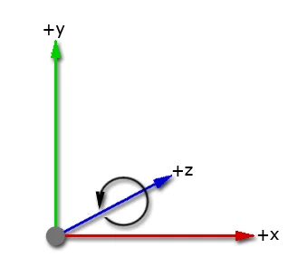

Unity uses the Quaternion class to store the three dimensional orientation of GameObjects and to describe a relative rotation from one orientation to another. In Unity, you can use both Euler angles and quaternions to represent rotations and orientation. These representations are equivalent but have different uses and limitations.
Typically, you rotate objects in your scene using the Transform componentA Transform component determines the Position, Rotation, and Scale of each object in the scene. Every GameObject has a Transform. More info
See in Glossary, which displays orientation as a Euler angle. However, Unity stores rotations and orientations internally as quaternions, which can be useful for more complex motions that might otherwise lead to gimbal lock.
A coordinate system describes the position of objects in a three-dimensional space. Unity uses a left-handed coordinate system: the positive x-axis points to the right, the positive y-axis points up, and the positive z-axis points forward. This means that the direction of rotation from the positive x-axis to the positive y-axis is counterclockwise when looking along the positive z-axis.

In the Transform component, Unity displays rotation with the vector property Transform.eulerAngles X, Y, and Z. Unlike a normal vector, these values represent the angle (in degrees) of rotation about the X, Y, and Z axes.
Euler angle rotations perform three separate rotations around the three axes. Unity performs these rotations sequentially around the z-axis first, followed by the x-axis, and finally the y-axis. This method is called extrinsic rotation; the original coordinate system doesn’t change while the rotations occur.
To rotate a GameObject, you can enter angle values in its Transform component for how far you want each axis to rotate. To rotate GameObjects from code, use Transform.eulerAngles.
If you convert to Euler angles to do calculations and rotations, you risk problems with gimbal lock. Gimbal lock is when an object in 3D space loses a degree of freedom and can only rotate within two dimensions. Gimbal lock can occur with Euler angles if two axes become parallel. If you don’t convert the rotational values to Euler angles in your script, then the use of quaternions prevents gimbal lock.
If you do have problems with gimbal lock, you can avoid Euler angles by using Transform.RotateAround for rotations. You can also use Quaternion.AngleAxis on each axis and multiply them together (quaternion multiplication applies each rotation in turn).
Quaternions provide mathematical notation for unique representations of spatial orientation and rotation in 3D space. A quaternion uses four numbers to encode the direction and angle of rotation around unit axes in 3D. These four values are complex numbers rather than angles or degrees.
Unity converts rotational values to quaternions to store them because quaternion rotations are efficient and stable to compute. The Unity Editor doesn’t display rotations as quaternions because a single quaternion can’t represent a rotation greater than 360 degrees about any axis.
You can use quaternions directly if you use the Quaternion class. To control rotations from code, you can use the Quaternion class and functions to create and change rotational values. You can apply values to your rotation as Euler angles but you need to store them as quaternions to avoid problems.
You can use the following methods to convert between quaternions and Euler angles to view and edit rotations from code:
Quaternion.Euler method.Quaternion.eulerAngles method.When handling rotations in your scripts, use the Quaternion class and its functions to create and modify rotational values. There are some situations where it’s valid to use Euler angles, but bear in mind:
Unity’s Quaternion class has a number of functions for creating and manipulating rotations without needing to use Euler angles and it’s recommended to use these in most cases.
For informating on creating rotations, including code examples, refer to the API reference for the following methods:
For information on manipulating rotations, including code examples, refer to the API reference for the following methods:
The Transform class also provides methods for working with Quaternion rotations:
In some cases it’s desirable to use Euler angles in your scripts. When doing so, it’s important to note that you must keep your angles in variables, and only use them to apply them as Euler angles to your rotation, which should still ultimately be stored as a Quaternion. While it’s possible to retrieve Euler angles from a quaternion, if you retrieve, modify and re-apply, problems are likely to arise. For more information on how these problems can arise, refer to the eulerAngles script reference page.
The following example shows how to use Euler angles in code correctly:
// Rotation scripting with Euler angles correctly.
// Store the Euler angle in a class variable, and only use it to
// apply it as an Euler angle, but never rely on reading the Euler back.
float x;
void Update ()
{
x += Time.deltaTime * 10;
transform.rotation = Quaternion.Euler(x,0,0);
}